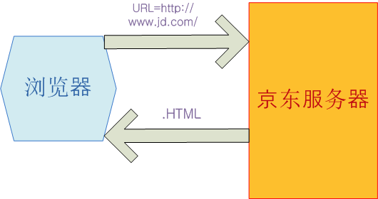
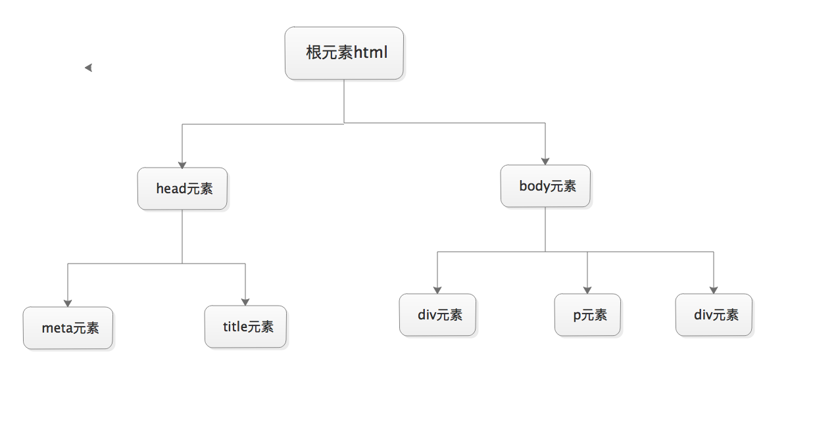

原文连接:https://www.cnblogs.com/hackerer/p/11470519.html
一、前端概述

import socket
def main():
sock = socket.socket(socket.AF_INET, socket.SOCK_STREAM)
sock.bind(('localhost',8089))
sock.listen(5)
while True:
connection, address = sock.accept()
buf = connection.recv(1024)
connection.sendall(bytes("HTTP/1.1 201 OK\r\n\r\n","utf8"))
connection.sendall(bytes("<h1>Hello,World</h1>","utf8"))
connection.close()
if __name__ == '__main__':
main()二、什么是HTML?
htyper text markup language 即超文本标记语言
超文本：就是指页面内可以包含图片、链接、甚至音乐、程序等非文字元素。
标记语言：标记(标签)构成的语言
网页==HTML文档，由浏览器解析，用来展示的
静态网页：静态的资源，比如test.html
动态网页：html代码是由某种开发语言根据用户请求动态生成的
html文档树形结构图：

三、标签
● 是由一对尖括号包裹的单词构成 例如: <html> *所有标签中的单词不可能以数字开头.
● 标签不区分大小写.<html> 和 <HTML>. 推荐使用小写.
● 标签分为两部分: 开始标签<a> 和 结束标签</a>. 两个标签之间的部分 我们叫做标签体.
● 有些标签功能比较简单.使用一个标签即可.这种标签叫做自闭和标签.例如: <br/> <hr/> <input /> <img />
● 标签可以嵌套.但是不能交叉嵌套. <a><b></a></b>
四、标签的属性
● 通常是以键值对形式出现的. 例如 name="simon"
● 属性只能出现在开始标签 或 自闭和标签中.
● 属性名字全部小写. *属性值必须使用双引号或单引号包裹 例如 name="simon"
● 如果属性值和属性名完全一样.直接写属性名即可. 例如 readonly
五、<!DOCTYPE html> 标签
由于历史的原因，各个浏览器在对页面的渲染上存在差异，甚至同一浏览器在不同版本中，对页面的渲染也不同。在
W3C标准出台以前，浏览器在对页面的渲染上没有统一规范，产生了差异(Quirks mode或者称为Compatibility
Mode)；由于W3C标准的推出，浏览器渲染页面有了统一的标准(CSScompat或称为Strict mode也有叫做Standars
mode)，这就是二者最简单的区别。
W3C标准推出以后，浏览器都开始采纳新标准，但存在一个问题就是如何保证旧的网页还能继续浏览，在标准出来以前，
很多页面都是根据旧的渲染方法编写的，如果用的标准来渲染，将导致页面显示异常。为保持浏览器渲染的兼容性，使以
前的页面能够正常浏览，浏览器都保留了旧的渲染方法（如：微软的IE）。这样浏览器渲染上就产生了Quircks mode
和Standars mode，两种渲染方法共存在一个浏览器上。
window.top.document.compatMode：
//BackCompat：怪异模式，浏览器使用自己的怪异模式解析渲染页面。
//CSS1Compat：标准模式，浏览器使用W3C的标准解析渲染页面。这个属性会被浏览器识别并使用，但是如果你的页面没有DOCTYPE的声明，那么compatMode默认就是BackCompat,
这也就是恶魔的开始 -- 浏览器按照自己的方式解析渲染页面，那么，在不同的浏览器就会显示不同的样式。
如果你的页面添加了<!DOCTYPE html>那么，那么就等同于开启了标准模式，那么浏览器就得老老实实的按照W3C的
标准解析渲染页面，这样一来，你的页面在所有的浏览器里显示的就都是一个样子了。
这就是<!DOCTYPE html>的作用。
六、head标签
<meta>
meta标签的组成：meta标签共有两个属性，它们分别是http-equiv属性和name 属性，不同的属性又有不同的参数值，这些不同的参数值就实现了不同的网页功能。
1: name属性主要用于描述网页，与之对应的属性值为content，content中的内容主要是便于搜索引擎机器人查找信息和分类信息用的。
1 <meta name="keywords" content="meta总结,html meta,meta属性,meta跳转">
2
3 <meta name="description" content="巨东公司牛B">
2: http-equiv顾名思义，相当于http的文件头作用，它可以向浏览器传回一些有用的信息，以帮助正确和精确地显示网页内容，与之对应的属性值为content， content中的内容其实就是各个参数的变量值。
1 <meta http-equiv="Refresh" content="2;URL=https://www.baidu.com"> //(注意后面的引号，分别在秒数的前面和网址的后面)
2
3 <meta http-equiv="content-Type" charset=UTF8">
4
5 <meta http-equiv = "X-UA-Compatible" content = "IE=EmulateIE7" /> 注意：X-UA-Compatible
每个主要版本IE新增的功能都是为了让浏览器更容易使用、增加安全性及更支持业界标准。以这些作为IE的特色，其中
一个风险就是旧版本网站无法正确的显示。
为了将这个风险降到最低，IE6允许网页开发人员选择IE编译和显示他们网页的方式。"Quirks mode"为预设，这会
使页面以旧版本浏览器的视点显示，"Standards mode"(也称为"strict mode")特点是支持业界标准最为完善。
然而要利用这个增强的支持功能，网页必须包含恰当的<!DOCTYPE>指令。
若一个网页没有包含<!DOCTYPE>指令，IE6会将它以quirks mode显示。若网页包含有效的<!DOCTYPE>指令但浏
览器无法辨识，IE6会将它以IE6 standards mode显示。因为少数网站已经包含<!DOCTYPE>指令，兼容性模式的
切换相当成功。这使网页开发人员能选择将他们的网页转移为standards mode的最佳时机。
随著时间经过，更多网站开始使用standards mode。它们也开始使用IE6的特性和功能来检测IE。举例来说，IE6
不支持universal selector(即css之全局选择器 * {})，一些网站便使用它来针对IE做特定的对应。
当 IE7增加了对全域选择器的支持，那些依赖IE6特点的网站便无法侦测出这个新版本的浏览器。因此那些针对IE的
特定对应无法应用于IE7，造成这些网站便无法如他们预期的显示。由于<!DOCTYPE>只支持两种兼容性模式，受到影
响的网站拥有者被迫更新他们的网站使其能支持IE7。
IE8 比之前的任何版本浏览器都更支持业界标准，因此针对旧版本浏览器设计的网页可能无法如预期般呈现。为了帮
助减轻所有问题，IE8引入文件兼容性的概念，使你能选择你的网页设计要对应的特定IE版本。文件兼容性在IE8增加
了一些新的模式，这些模式能告诉浏览器如何解析和编译一个网页。若你的网页无法在 ie8正确的显示，你可以更新
你的网站使它支持最新的网页标准(优先选项)或在你的页面上新增一个meta元素用于告诉IE8如何依照旧版本浏览器
编译你的页面。
这能让你选择将你的网站更新支持IE8新特点的时机。
当 Internet Explorer 8 遇到未包含 X-UA-Compatible 标头的网页时，它将使用 <!DOCTYPE> 指令来确
定如何显示该网页。 如果该指令丢失或未指定基于标准的文档类型，则 Internet Explorer 8 将以 IE5 模式
（Quirks 模式）显示该网页。非meta标签
<title>oldboy</title>
<link rel="icon" href="http://www.jd.com/favicon.ico">
<link rel="stylesheet" href="css.css">
<script src="hello.js"></script> 七、body标签
<hn>: n的取值范围是1~6; 从大到小. 用来表示标题.
<p>: 段落标签. 包裹的内容被换行.并且也上下内容之间有一行空白.
<b> <strong>: 加粗标签.
<strike>: 为文字加上一条中线.
<em>: 文字变成斜体.
<sup>和<sub>: 上角标 和 下角表.
<br>:换行.
<hr>:水平线
<div><span>块级标签：<p><h1><table><ol><ul><form><div>
内联标签：<a><input><img><sub><sup><textarea><span>
block（块）元素的特点
总是在新行上开始；
宽度缺省是它的容器的100%，除非设定一个宽度。
它可以容纳内联元素和其他块元素
inline元素的特点
和其他元素都在一行上；
宽度就是它的文字或图片的宽度，不可改变
内联元素只能容纳文本或者其他内联元素
特殊字符
< >；"；©®
二 图形标签: <img>
src: 要显示图片的路径.
alt: 图片没有加载成功时的提示.
title: 鼠标悬浮时的提示信息.
width: 图片的宽
height:图片的高 (宽高两个属性只用一个会自动等比缩放.)三 超链接标签(锚标签)<a>
href:要连接的资源路径 格式如下: href="http://www.baidu.com"
target: _blank : 在新的窗口打开超链接. 框架名称: 在指定框架中打开连接内容.
name: 定义一个页面的书签.
用于跳转 href : #id.（锚）
四 列表标签：

<ul>: 无序列表
<ol>: 有序列表
<li>:列表中的每一项.
<dl> 定义列表
<dt> 列表标题
<dd> 列表项五 表格标签: <table>
border: 表格边框.
cellpadding: 内边距
cellspacing: 外边距.
width: 像素 百分比.（最好通过css来设置长宽）
<tr>: table row
<th>: table head cell
<td>: table data cell
rowspan: 单元格竖跨多少行
colspan: 单元格横跨多少列（即合并单元格）
<th>: table header <tbody>(不常用): 为表格进行分区.
六 表单标签<form>
表单用于向服务器传输数据。
表单能够包含 input 元素，比如文本字段、复选框、单选框、提交按钮等等。
表单还可以包含textarea、select、fieldset和 label 元素。
1.表单属性
HTML 表单用于接收不同类型的用户输入，用户提交表单时向服务器传输数据，从而实现用户与Web服务器的交互。表单标签, 要提交的所有内容都应该在该标签中.
action: 表单提交到哪. 一般指向服务器端一个程序,程序接收到表单提交过来的数据（即表单元素值）作相应处理，比如https://www.sogou.com/web
method: 表单的提交方式 post/get 默认取值 就是 get（信封）
get: 1.提交的键值对.放在地址栏中url后面. 2.安全性相对较差. 3.对提交内容的长度有限制.
post:1.提交的键值对 不在地址栏. 2.安全性相对较高. 3.对提交内容的长度理论上无限制.
get/post是常见的两种请求方式.
2.表单元素
<input> 标签的属性和对应值
type: text 文本输入框
password 密码输入框
radio 单选框
checkbox 多选框
submit 提交按钮
button 按钮(需要配合js使用.) button和submit的区别？
file 提交文件：form表单需要加上属性enctype="multipart/form-data"
name: 表单提交项的键.注意和id属性的区别：name属性是和服务器通信时使用的名称；而id属性是浏览器端使用的名称，该属性主要是为了方便客
户端编程，而在css和javascript中使用的 value: 表单提交项的值.对于不同的输入类型，value 属性的用法也不同：|
1
2
3
4
5
|
type="button", "reset", "submit" - 定义按钮上的显示的文本type="text", "password", "hidden" - 定义输入字段的初始值type="checkbox", "radio", "image" - 定义与输入相关联的值 |
checked: radio 和 checkbox 默认被选中
readonly: 只读. text 和 password
disabled: 对所用input都好使.上传文件注意两点：
1 请求方式必须是post
2 enctype="multipart/form-data"
<select> 下拉选标签属性
name:表单提交项的键.
size：选项个数
multiple：multiple
<option> 下拉选中的每一项 属性：
value:表单提交项的值. selected: selected下拉选默认被选中
<optgroup>为每一项加上分组<textarea> 文本域
name: 表单提交项的键.
cols: 文本域默认有多少列
rows: 文本域默认有多少行<label>
<fieldset>